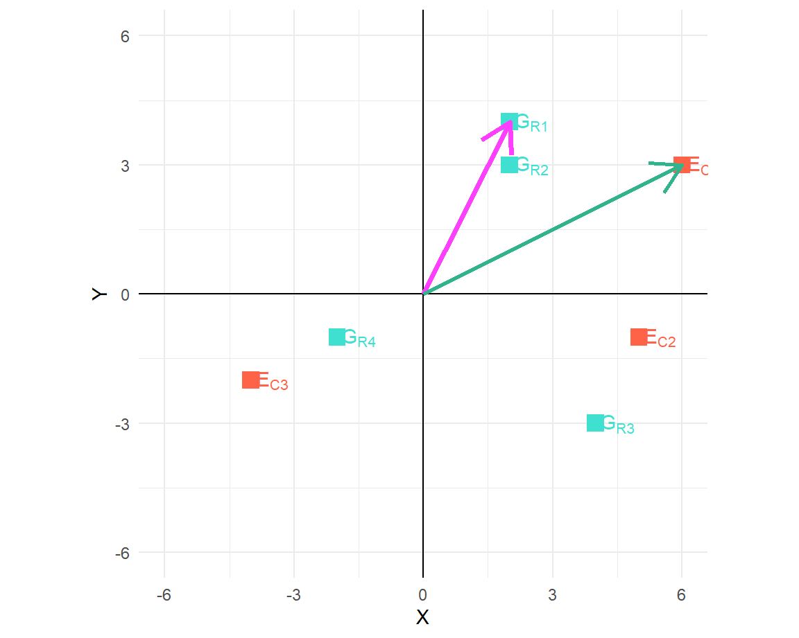

Comparison of treatments may also imply cross comparison of their stability across multiple environments, especially when a study constitutes a series of trials that are each conducted at different locations and/or at different periods in time (henceforth referred to as MET; Multi-Environment Trial). Several situations exist where only mean based performance analysis are regarded inconclusive.
For example, in varietal release process the authorizing body seeks record of consistent trait performace of certain crop genotype. The imperative is: a variety needs to be stably exhibit it’s characters in the proposed domain of cultivation, which generally is a wide area, throughout a long duration of cultivation cycles. This pre-condition of stable character inheritance is more relevant to crops constituting a homogenous and homozygous population. Either of the location, time period or combination of both, more commonly framed as year in field researches, could be assumed to present an unique environment that treatment entries are tested in. Thus, for results to be widely applicable, performance measures across environments should be more or less stable. To the contrary, the concept of utilizing differential character expression across different environments is often explored when interaction between genotypes and environments result in more desirable character.
In MET trials, it is also of interest whether the same treatments perform well or poorly in all locations, or are there as-yet-unknown subpopulations such that some treatments perform optimally at certain types of locations whereas other treatments are better suited for other locations(Littell et al. 2007). By assessing the simple effects of treatments at each location using the BLUPs demonstrated in this example, the stability issue can be addressed using mixed model methods.
GE has been a research focus among biometricians and quantitative geneticists since the early 1900s. With the notion that GE is undesirable and/or that it confounds genotype evaluation, much work has been devoted to developing stability indices to quantify and select against GE. Many stability indices have been proposed, as reviewed in Lin and Binns (1994) and more recently in Yan and Kang (2003). Several books and symposium proceedings have been published to document the advances in the study of GE (Byth and Montgomery1981; Kang, 1990, 2003; Gauch 1992; Imrie and Hacker 1993; Kang and Gauch 1996; Cooper and Hammer 1996) and most earlier research on GE can be traced from these publications.[copied]
Two concepts exist that aim to explain the stability – static/biological stability and dynamic/agronomic stability. The concept of static stability maintains that the genotypic response of a trait remains unchanged over environment, i.e. a genotype has equally same response across all environments. This concept is defines stability in absolute stringent terms, which actually is never the case when dealing with natural components.The other concept, dynamic stability, attempts to associate stability with predictive performance. It highlights the importance of statistical agreement between the predicted performance and the observed performance.
A biplot is a scatter plot that approximates and graphically displays a two-way table by both its row and column factors such that relationships among the row factors, relationships among the column factors, and the underlying interactions between the row and column factors can be visualized simultaneously. Since its first report by Gabriel (1971), biplots have been used in visual data analysis by scientists of all disciplines, from economics, sociology, business, medicine, to ecology, genetics, and agronomy. The first application of biplots to agricultural data analysis was Bradu and Gabriel (1978), who used data from a cotton performance trial to illustrate the diagnostic role of biplots for model selection.
A common misconception is that biplot analysis is equivalent to principle component analysis (PCA). While both biplot analysis and PCA use Singular Value Decomposition (SVD) (Pearson 1901) as a key mathematical technique, biplot analysis is a fuller use of SVD to allow two interacting factors to be visualized simultaneously.
Mathematically, a biplot may be regarded as a graphical display of matrix multiplication. Given a matrix \(G\) with \(m\) rows and \(r\) columns, and a matrix \(E\) with \(r\) rows and \(n\) columns, they can be multiplied to give a third matrix \(P\) with \(m\) rows and \(n\) columns. If r = 2, then matrix \(G\) can be displayed as \(m\) points in a 2-D plot, with the 1st column as the abscissa (\(x\)-axis) and 2nd column the ordinate (\(y\)-axis). Similarly, matrix \(E\) can be displayed as \(n\) points in a 2-D plot, with the 1st row as the abscissa and 2nd row the ordinate. A 2-D biplot is formed if the two plots are superimposed, which would contain \(m + n\) points. An interesting property of this biplot is that it not only displays matrices \(G\) and \(E\), but also implicitly displays the \(m \times n\) values of matrix \(P\), because each element of \(P\) can be visualized as:
\[ p_{ij} = x_ix^\prime_j + y_iy^\prime_j = \vec{g_i}\vec{e_i} = |g_i||e_j|\cos\theta_{ij} \]
where \((x_i, y_i)\) are the coordinates for row \(i\) and \((x\prime_j, y\prime_j)\) are the coordinates for column j. \(\vec{g_i}\) is the vector for row \(i\) and \(\vec{e_i}\) is the vector for column \(j\). \(|g_i|\) is the vector length for row i and \(|e_j|\) is the vector length for column j. \(\theta_{ij}\) is the angle between the vectors of row \(i\) and column \(j\).
The founder of biplot (Gabriel 1971) summarizes biplot analysis as any two-way table can be graphically analyzed using a 2-D biplot as soon as it can be sufficiently approximated by a rank-2 (i.e., \(r\) = 2) matrix.
Example: 1
Let us consider two matrices, matrix \(G\) and matrix \(E\) as shown below:
\[ G = \left[ \begin{matrix} 2 & 4 \\ 2 & 3 \\ 4 & -3 \\ -2 & -1 \\ \end{matrix} \right] ;\ E = \left[ \begin{matrix} 6 & 5 & -4 \\ 3 & -1 & -2 \\ \end{matrix} \right] \]
Now by cross multiplying (vector multiplication) of \(G\) and \(E\), we get \(P\) matrix:
\[ P = \left[ \begin{matrix} 24 & 6 & -16 \\ 21 & 7 & -14 \\ 15 & 23 & -10 \\ -15 & -9 & 10 \\ \end{matrix} \right] \]
The matrix is a “rank 2” matrix. Taking a graphical approach, we can visualize the above two matrices; we can overlay the plottings of matrices in a way stated above to obtain a graph of \(m+n\) points where, \(m\) = number of rows in \(G\) matrix and \(n\) = number of columns in \(E\) matrix.
Figure 1: Biplot of G and E matrices with m+n=7 points
The proof about approximation of \(P\) matrix can be shown geometrically, i.e.:
\[ P_{ij} = \vec{R_i}cos\alpha_{ij}\vec{C_j};\\ \vec{R_i} = \sqrt{x^2_{R_i} + y^2_{R_i}},~\vec{C_j} = \sqrt{x^2_{C_j} + y^2_{C_j}} \]
First, to determine the segment length, we compute the distance between the corresponding point and the centre.
## [1] 4.47 3.61 5.00 2.24## [1] 6.71 5.10 4.47Calculate clockwise angle between row and column segments connected by the origin.
As an example, two segments: G_R1 and E_C1, are joined illustrating the angle between them.

From the above equation, first element of matrix \(P\) (\(P_{ij}\)) is:
\[\begin{equation} \begin{split} P_{11} & = \vec{R_1}cos\alpha_{11}\vec{C_1} \\ & = 4.46\ cos(36.9)\ 6.71 \\ & = 24 \end{split} \end{equation}\]
Similarly, to obtain the column vector \(P_{i1}\), we have following four elements resulting from the vector product.
## [1] 24 21 15 -15Kronecker solution to matrix binding